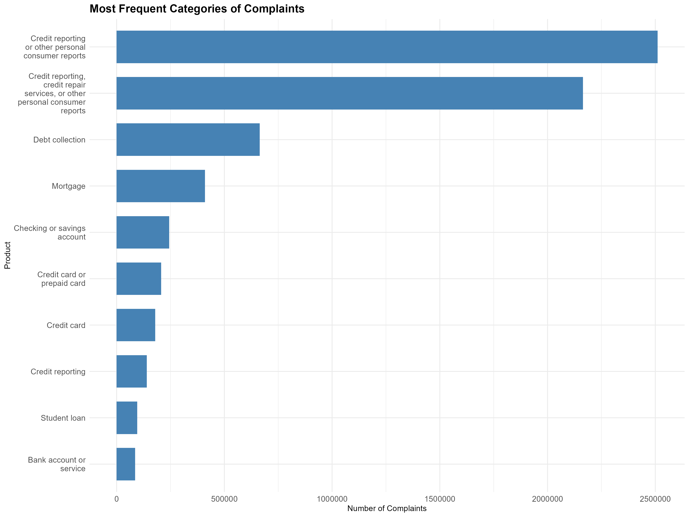

Business Problem
Rising CFPB complaint volumes create reputational, compliance, and revenue risks for banks and fintechs. Without a clear view of spikes, firms struggle to prioritise fixes, allocate resources, and stay ahead of regulators.
| Objective | Business Value |
|---|---|
| Early-warning radar | Detect product failures before they trigger fines or class-action suits. |
| Peer benchmarking | Compare complaint rates by product & state to expose outliers. |
| Root-cause targeting | Trace surges to specific workflows (e.g., credit-report fixes) and redesign them. |
| Resource allocation | Focus CX budgets on hotspots (FL, TX, CA) and high-risk categories. |
| Regulatory readiness | Give risk committees KPIs that pre-empt CFPB investigations. |

Data & Methodology
We analysed 6.9 million CFPB complaints from 2011-01-01 to 2024-03-31, downloaded via the public API and processed in R. Below is the five-step workflow that ensures data quality and insightful visuals.
-
Ingest & type-casting —
Load raw CSV and convert dates / factors with
readr::read_csv. -
Data cleaning —
Drop duplicates and empty narratives (0.6%) using
dplyr. -
Date enrichment —
Add
YearandMonthfields vialubridatefor time-series aggregation. -
Geo-join —
Map two-letter states to FIPS codes (
usmap,sf) for choropleths. -
Visual EDA —
Create heat-maps, bar charts and line plots with
ggplot2&leaflet.
Limitation: dataset only captures consumers who filed formal complaints; silent dissatisfaction is not recorded.
What I found
Key Insights
Next Steps
- Publish monthly credit-report KPI dashboard for risk teams.
- Pilot chatbot resolution in hotspot states.
- Apply NLP topic modelling to flag emerging issues.
Conclusions
The CFPB dataset highlights persistent issues in credit reporting and debt collection. Geographic analysis shows disproportionate complaint volumes in populous, financially complex states. The pronounced uptick post-2020 underscores how economic shocks translate into consumer-finance friction.
Credits
Analysis by Juan Camilo Sierra Escobar, December 2024.
Data sourced from the Consumer Financial Protection Bureau (CFPB).